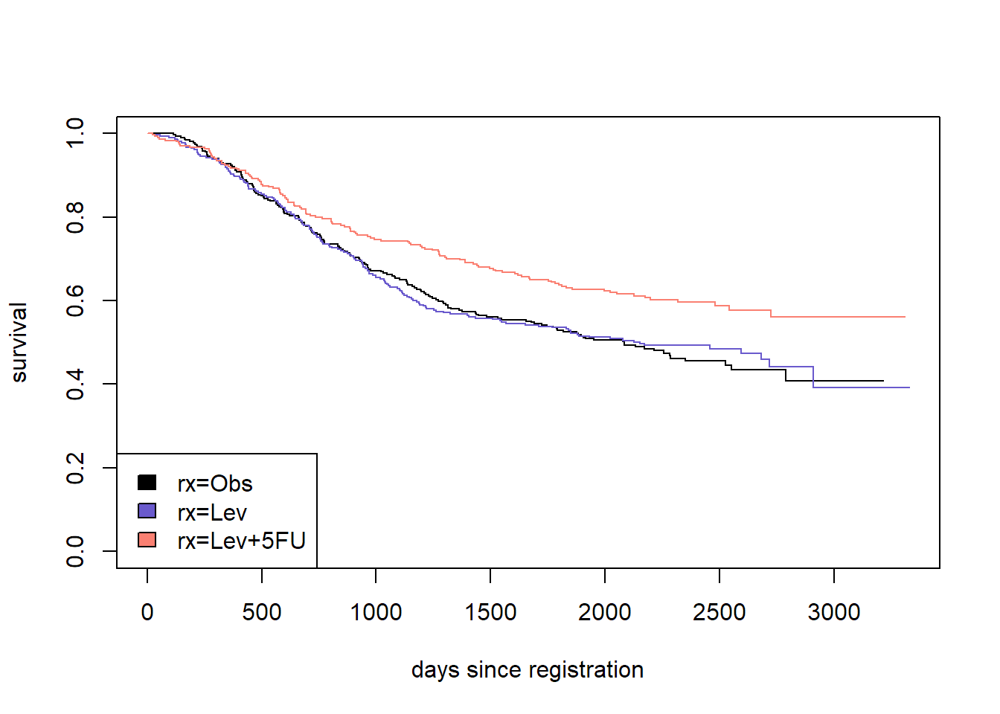
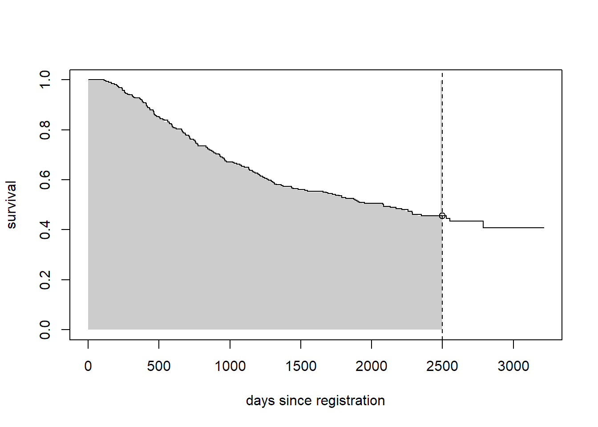

In this lesson you will
eventglm is usedeventglm models and estimates to what you get from the survival packageLibrary the survival package and then the eventglm package. We will use some commands from survival to make sense of what is going on in the regression models.
library(survival)
library(eventglm)##
## Attaching package: 'eventglm'## The following objects are masked from 'package:survival':
##
## colon, mgus2Our first example concerns the colon dataset, which is included in the package:
?eventglm::colonThis is a randomized trial, so the main interest is in comparing the distributions of time to death between the three treatment arms. Let’s start with a survival curve.
sfit <- survfit(Surv(time, status) ~ rx, data = colon)
plot(sfit, col = c("black", "slateblue", "salmon"),
xlab = "days since registration", ylab = "survival")
legend("bottomleft", fill = c("black", "slateblue", "salmon"),
legend = names(sfit$strata))
There are many ways to summarize the distribution of time to event. We will focus on two options: the survival at a particular time, and the restricted mean survival up to a given time. Let’s compare the survival at 7 years, or about 2500 days since registration.
plot(sfit[1], conf.int = FALSE, xlab = "days since registration", ylab = "survival")
seg0 <- summary(sfit[1], times = sfit[1]$time[sfit[1]$time <= 2500])
rect(c(0, seg0$time), 0, c(seg0$time, 2500), c(seg0$surv),
border = NA, col = "grey80")
lines(sfit[1], conf.int = FALSE)
abline(v = 2500, lty = 2)
points(x = 2500, y = summary(sfit[1], times = 2500)$surv)
In the figure above, we plot only the survival curve in the observation group. The vertical dotted line is at the time of interest (tmax = 2500 days). The open point is at the estimated survival probability at time tmax, i.e., \(P(T > tmax)\) and the shaded area represents the restricted mean survival up to tmax, i.e., \(E\{\min(T, tmax)\} = \int_0^{tmax} P(T > u) \, du\). We can estimate these things using the survival package:
colon.sfit <- summary(sfit, times = 2500, rmean = 2500)
colon.sfit## Call: survfit(formula = Surv(time, status) ~ rx, data = colon)
##
## rx=Obs
## time n.risk n.event survival std.err lower 95% CI
## 2.50e+03 5.00e+01 1.65e+02 4.55e-01 2.98e-02 4.00e-01
## upper 95% CI
## 5.18e-01
##
## rx=Lev
## time n.risk n.event survival std.err lower 95% CI
## 2.50e+03 5.80e+01 1.57e+02 4.85e-01 2.92e-02 4.31e-01
## upper 95% CI
## 5.46e-01
##
## rx=Lev+5FU
## time n.risk n.event survival std.err lower 95% CI
## 2.50e+03 6.50e+01 1.21e+02 5.88e-01 2.96e-02 5.33e-01
## upper 95% CI
## 6.49e-01colon.sfit$table## records n.max n.start events *rmean *se(rmean) median 0.95LCL
## rx=Obs 315 315 315 168 1666.948 49.85546 2083 1656
## rx=Lev 310 310 310 161 1661.239 51.26220 2152 1540
## rx=Lev+5FU 304 304 304 123 1862.262 49.57411 NA 2725
## 0.95UCL
## rx=Obs 2789
## rx=Lev NA
## rx=Lev+5FU NAAnd we can now do inference on these quantities using the eventglm package. First, we fit a regression model for the cumulative incidence, or 1 - survival:
colon.cifit <- cumincglm(Surv(time, status) ~ rx, time = 2500, data = colon)
summary(colon.cifit)##
## Call:
## cumincglm(formula = Surv(time, status) ~ rx, time = 2500, data = colon)
##
## Deviance Residuals:
## Min 1Q Median 3Q Max
## -0.5875 -0.4902 -0.3467 0.4863 2.1103
##
## Coefficients:
## Estimate Std. Error z value Pr(>|z|)
## (Intercept) 0.54345 0.02946 18.449 < 2e-16 ***
## rxLev -0.02907 0.04173 -0.697 0.48596
## rxLev+5FU -0.13176 0.04186 -3.148 0.00165 **
## ---
## Signif. codes: 0 '***' 0.001 '**' 0.01 '*' 0.05 '.' 0.1 ' ' 1
##
## (Dispersion parameter for quasi family taken to be 1)
##
## Null deviance: 253.10 on 928 degrees of freedom
## Residual deviance: 250.15 on 926 degrees of freedom
## AIC: NA
##
## Number of Fisher Scoring iterations: 2se.ci <- sqrt(diag(vcov(colon.cifit, type = "robust")))
b.ci <- coefficients(colon.cifit)
conf.ci <- confint(colon.cifit)In the model above, which is fit using the function cumincglm, the model is for the cumulative incidence of death up to 2500 days: \[
P(T \leq 2500 | \mbox{rx}) = \beta_0 + \beta_1 I(rx = "Lev") + \beta_2 I(rx = "Lev+5FU").
\]
What is the interpretation of the coefficients in the model? How do the estimates from the eventglm model compare to the Kaplan-Meier estimate?
The cumulative incidence of death up to 2500 days in the Observation arm is the intercept 0.54. The first coefficient is the expected difference in cumulative incidence of death up to 2500 days comparing the Levamisole alone treatment group to the Observation arm: an estimated -0.03 difference in the cumulative incidence of death at 2500 days, with 95% confidence interval -0.11, 0.05, while the Levamisole plus 5-FU group has a -0.13 difference in the cumulative incidence of death at 2500 days, with 95% confidence interval -0.21, -0.05.
Loosely speaking, the coefficients are risk differences, where the risk refers to the probability of dying within 2500 days. This roughly agrees with the Kaplan-Meier estimates from survfit above:
cbind(eventglm = b.ci,
survfit = c(1 - colon.sfit$surv[1],
(1 - colon.sfit$surv[2:3]) -
(1 - rep(colon.sfit$surv[1], 2))))## eventglm survfit
## (Intercept) 0.54345139 0.54479221
## rxLev -0.02907499 -0.02990601
## rxLev+5FU -0.13175778 -0.13301654Look at the help file for cumincglm. There is a long list of options for the function, but one important one is the survival argument which is FALSE by default. If we set this to TRUE:
colon.survfit <- cumincglm(Surv(time, status) ~ rx, time = 2500,
survival = TRUE, data = colon)
summary(colon.survfit)##
## Call:
## cumincglm(formula = Surv(time, status) ~ rx, time = 2500, data = colon,
## survival = TRUE)
##
## Deviance Residuals:
## Min 1Q Median 3Q Max
##
##
## Coefficients:
## Estimate Std. Error z value Pr(>|z|)
## (Intercept) 0.45655 0.02946 15.498 < 2e-16 ***
## rxLev 0.02907 0.04173 0.697 0.48596
## rxLev+5FU 0.13176 0.04186 3.148 0.00165 **
## ---
## Signif. codes: 0 '***' 0.001 '**' 0.01 '*' 0.05 '.' 0.1 ' ' 1
##
## (Dispersion parameter for quasi family taken to be 1)
##
## Null deviance: 253.10 on 928 degrees of freedom
## Residual deviance: 250.15 on 926 degrees of freedom
## AIC: NA
##
## Number of Fisher Scoring iterations: 2b2.ci <- coefficients(colon.survfit)
conf2.ci <- confint(colon.survfit)we get a model for the probability of surviving beyond 2500 days: \[ P(T > 2500 | \mbox{rx}) = \beta_0 + \beta_1 I(rx = "Lev") + \beta_2 I(rx = "Lev+5FU"). \]
What is the interpretation of the coefficients in the model? How do they differ from the first model?
One of the arguments for cumincglm is link, which is “identity” by default. Other link functions can be used and the interpretation of the coefficients differs depending on the link function. The general generalized linear model in our example is \[
g\{P(T \leq 2500 | \mbox{rx})\} = \beta_0 + \beta_1 I(rx = "Lev") + \beta_2 I(rx = "Lev+5FU")
\] where \(g\) is the link function. Let’s use \(g(x) = \log(x)\) and see what happens.
colon.logci <- cumincglm(Surv(time, status) ~ rx, time = 2500,
link = "log", data = colon)
colon.logci##
## Call: cumincglm(formula = Surv(time, status) ~ rx, time = 2500, link = "log",
## data = colon)
##
##
## Model for the log cumulative incidence at time 2500
##
## Coefficients:
## (Intercept) rxLev rxLev+5FU
## -0.60982 -0.05498 -0.27766
##
## Degrees of Freedom: 928 Total (i.e. Null); 926 ResidualIn the above model, the intercept is interpreted as the log cumulative incidence in the observation arm. The coefficient for Lev is \[ \log\{P(T \leq 2500 | \mbox{rx=Lev}\} - \log\{P(T \leq 2500 | \mbox{rx=Obs}\} = \] \[ \log\{\frac{P(T \leq 2500 | \mbox{rx=Lev}}{P(T \leq 2500 | \mbox{rx=Obs}}\}, \] the log relative risk or log risk ratio. Thus to get the relative risk, an interpretable quantity, we can exponentiate the coefficient estimates and confidence interval limits:
exp(coef(colon.logci))## (Intercept) rxLev rxLev+5FU
## 0.5434514 0.9464994 0.7575537exp(confint(colon.logci))## 2.5 % 97.5 %
## (Intercept) 0.4886765 0.6043659
## rxLev 0.8107384 1.1049940
## rxLev+5FU 0.6346642 0.9042381Other link functions are possible. For example, “logit” is a convenient way to estimate odds and odds ratios, and a “cloglog” link for the cumulative incidence is related to a proportional hazards model. We will return to this in the next section.
There is another function called rmeanglm that fits regression models for the restricted mean. The syntax is very similar:
colon.rmeanfit <- rmeanglm(Surv(time, status) ~ rx, time = 2500, data = colon)
colon.rmeanfit##
## Call: rmeanglm(formula = Surv(time, status) ~ rx, time = 2500, data = colon)
##
##
## Model for the identity restricted mean at time 2500
##
## Coefficients:
## (Intercept) rxLev rxLev+5FU
## 1667.403 -6.074 194.954
##
## Degrees of Freedom: 928 Total (i.e. Null); 926 Residualb.rm <- coefficients(colon.rmeanfit)
conf.rm <- confint(colon.rmeanfit)This is a model for the restricted mean up to 2500 days (where \(x \wedge y = \min(x, y)\)): \[ E(T \wedge 2500 | \mbox{rx}) = \beta_0 + \beta_1 I(rx = "Lev") + \beta_2 I(rx = "Lev+5FU"). \]
We can compare these to the estimates from the Kaplan-Meier fits as before. Here the coefficients are interpreted as restricted mean differences.
cbind(eventglm = b.rm,
survfit = c(colon.sfit$table[1,5],
colon.sfit$table[2:3,5] - rep(colon.sfit$table[1,5], 2)))## eventglm survfit
## (Intercept) 1667.40308 1666.948078
## rxLev -6.07367 -5.708803
## rxLev+5FU 194.95446 195.313754What is the point of having regression models for these quantities that we can easily get from survfit?
The regression models are much more flexible. Yes survfit can give you estimates in a small number of subgroups, but with eventglm it is trivial to do the following things:
As we continue this tutorial we will explore these possibilities and learn more about how these types of models work.